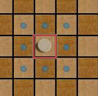
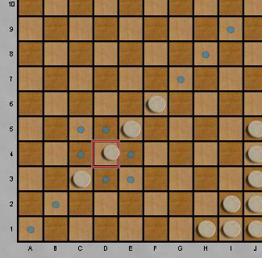
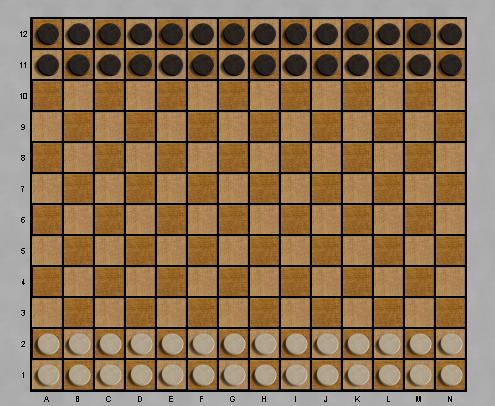
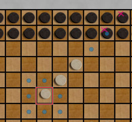

|
|
|
Epaminondas is played on a 14x12 board. Smaller boards are also available.
| There are two players: Light and Dark. The initially the first two rows of each side contain checkers, as shown at the right. The objective of the game is to have more checkers in your opponents home row, after their turn. So if you reach the goal row, your opponent has one move to either make a matching movement into your home row, or to capture the intruder. Single checkers can move to any adjacent empty space.  Lines of checkers can move in a phalanx, up to the number of spaces as there are checkers moving.  |  Captures are possible if a phalanx move collides with an opposing checker, and the length of the line in the direction of movement is less than the number of checkers moving in the phalanx. Movement stops at the first opposing checker, but the entire line of opponents is captured.  |
| To prevent draws caused by copycat play, it's forbidden to move into your opponent's home row if that forms a symmetric position. |
| E-Mail: | Go to BoardSpace.net home page |